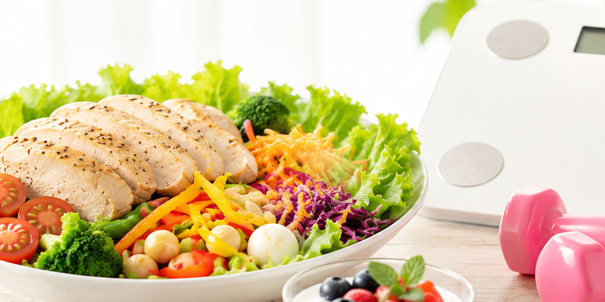

たまごのダイエットチャンネルへようこそ
ダイエットは短期間で痩せることばかり注目されがちですが、無理な食事制限や極端なダイエットはリバウンドや体調不良の原因となります。本サイトでは、生活習慣を整えながら”無理なく続けられるゆる長く続くダイエット”をテーマに、初心者でも実践できる食事・運動・習慣の改善情報を発信します。正しい知識を分かりやすく届け、健康的に理想の体型を目指す人をサポートすることを目的としています。


ダイエットは短期間で痩せることばかり注目されがちですが、無理な食事制限や極端なダイエットはリバウンドや体調不良の原因となります。本サイトでは、生活習慣を整えながら”無理なく続けられるゆる長く続くダイエット”をテーマに、初心者でも実践できる食事・運動・習慣の改善情報を発信します。正しい知識を分かりやすく届け、健康的に理想の体型を目指す人をサポートすることを目的としています。